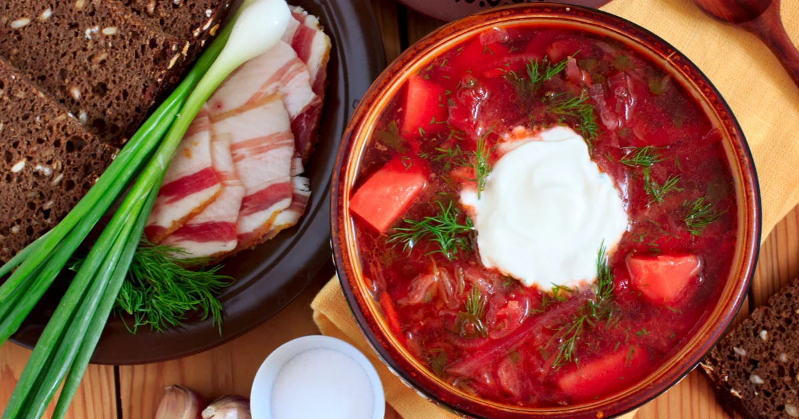

Das Fleisch in einen großen Topf geben, mit kaltem Wasser aufgießen und zum Kochen bringen. Den Schaum sorgfältig abschöpfen, das Lorbeerblatt hinzugeben und bei schwacher Hitze ca. 1,5 bis 2 Stunden köcheln lassen, bis das Fleisch zart ist. Danach das Fleisch herausnehmen, zerkleinern und wieder in den Topf geben.
Rote Bete, Karotte und Zwiebel in feine Streifen schneiden. Die Kartoffeln würfeln und den Weißkohl fein hobeln.
Zwiebeln und Möhren in einer Pfanne mit Pflanzenöl 5 Minuten anbraten. Die Rote Bete, Tomatenmark und Essig oder Zitronensaft hinzufügen (sehr wichtig für den Erhalt der intensiven roten Farbe!). Etwas Fleischbrühe dazugießen und ca. 15–20 Minuten bei mittlerer Hitze dünsten lassen.
Die Kartoffeln in die kochende Fleischbrühe geben und 10 Minuten garen. Danach den Weißkohl hinzufügen und weitere 5 Minuten garen lassen.
Das gedünstete Gemüse aus der Pfanne in die Suppe geben. Den Knoblauch dazupressen, mit Salz und Pfeffer abschmecken und alles ca. 5–10 Minuten leicht köcheln lassen.
Den Herd ausschalten und die Suppe abgedeckt mindestens 15–20 Minuten ziehen lassen. Mit frischen Kräutern (Dill/Petersilie) und Schmand heiß servieren. Guten Appetit!